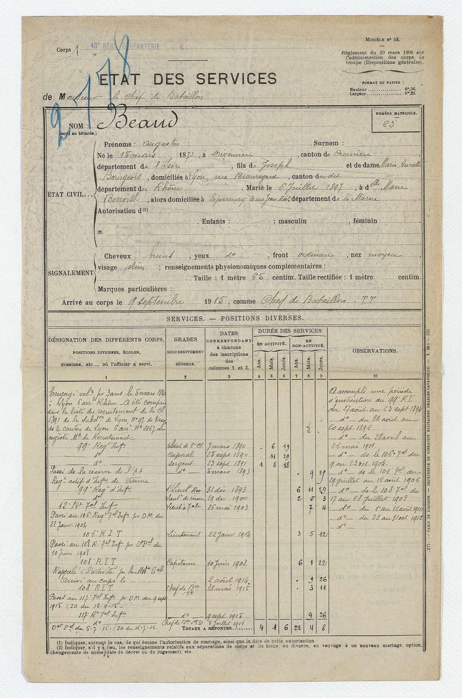

Dossier administratif · 1915/1923
Base Léonore, dossier BEAUD Augustin, LH 19800035/628/72713 (notice 23096) : état des services, proposition de 1923
Ce document établit
- Léonore, état des services d'Augustin Beaud : né le 15 mars 1871 à Dizimieu (Isère), fils de Joseph et de Marie Annette Bourgeois ; marié le 6 juillet 1897 à Marie Benoist, alors domiciliée à Épernay, rue Jean-Moët ; sous-lieutenant de réserve 1893 ; lieutenant au 106e RIT (22/01/1904) ; capitaine au 108e RIT (10/06/1908) ; rappelé le 2/08/1914 au 108e RIT ; chef de bataillon (28/05/1915) ; 117e RIT (9/09/1915) ; en 1923 et 1931, domicilié 61 boulevard Magenta à Paris. vérifié A0964
« « Né le 15 mars 1871, à Dizimieu […] Marié le 6 juillet 1897, à D^lle Marie Benoist, alors domiciliée à Épernay » ; « Passé au 108e R^t T^al d'Inf^e par D.P^le du 10 juin 1908 — Capitaine » » (lecture incertaine : non)
- Le témoin du mariage de Léon Dubart à Tours (26/04/1897) et l'époux du mariage d'Épernay (juillet 1897) sont le même homme, Augustin Beaud, né le 15 mars 1871 à Dizimieu (Isère). vérifié A0965
« « Né le 15 mars 1871, à Dizimieu […] Marié le 6 juillet 1897, à D^lle Marie Benoist, alors domiciliée à Épernay » ; « Passé au 108e R^t T^al d'Inf^e par D.P^le du 10 juin 1908 — Capitaine » » (lecture incertaine : non)
- Le président de la Commission des soldats du Syndicat des employés du commerce et de l'industrie (« M. Beaud » 1901, « lieutenant Beaud » 1904, « Augustin Beaud, capitaine de réserve, l'ancien et très dévoué président de notre Commission des soldats », cité à l'ordre du 108e territorial, 1915) est Augustin Beaud, né le 15/03/1871 à Dizimieu ; c'est donc aussi le témoin du mariage de Léon Dubart à Tours en 1897 (A0965). vérifié A0966
« « Né le 15 mars 1871, à Dizimieu […] Marié le 6 juillet 1897, à D^lle Marie Benoist, alors domiciliée à Épernay » ; « Passé au 108e R^t T^al d'Inf^e par D.P^le du 10 juin 1908 — Capitaine » » (lecture incertaine : non)
- L'Augustin Beaud témoin du mariage de Léon Dubart à Tours le 26/04/1897 (A0016) est l'Augustin Beaud président de la Commission des soldats du Syndicat des employés du commerce et de l'industrie (A0897, A0913, A0917, A0919, A0920) : identité établie le 27/11/2026 par A0965 et A0966 (hypothèse d'origine du 26/11/2026). vérifié A0921
- Wikipédia date le mariage Beaud-Benoist du 7 juillet 1897, Léonore du 8 juillet [?], la marge de l'acte d'Épernay du 6 juillet. non résolu A1038
Transcription
recherches/generation-3/leon-apres-1900/beaud/transcriptions.md (B2)
Lire la transcription intégrale : Augustin BEAUD — transcriptions (session principale, 27/11/2026) →
Personnes concernées
Lecture d'agent en image, avec [?] (date du mariage 8 juillet [?], profession « négociant en [vins ?] »). Seul « BEAUD Augustin » de la base Léonore selon l'agent. Piste PM-060. | 27/11/2026 : état des services (vue 14) relu sur l'image par la session principale : mariage le 6 juillet 1897 (et non le 8) ; capitaine au 108e RIT le 10/06/1908 ; chef de bataillon le 28/05/1915.
Continuer
Toutes les archives →Document précédent« L'Employé » (Paris), procès-verbal du Conseil, séance du 16 janvier 1915 (présidence de M. Baumann)n° 247 (25e année), numéro double janvier-février 1915 (Gallica : 01/01/1915) ; contient le PV du 16 janvier 1915Document suivant« L'Employé : organe du Syndicat des employés du commerce et de l'industrie » (Paris), Conseil d'administration, extrait des procès-verbaux, séance du 8 juillet 19171917-07-08 (séance ; date de parution du numéro non relevée)